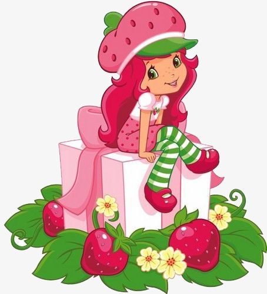
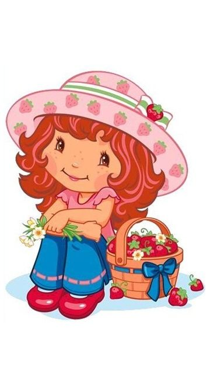

Imagem de mungfali_com - Pinterest Link da Imagem
Imagem de pngtree - Pinterest Link da Imagem
Imagem de anesilvia - Pinterest Link da Imagem
Imagem de Silvillate - Pinterest Link da Imagem
Imagem de cassiagomes03 Link da Imagem
Porque depois de todo esse desespero vem a resignação. A gente entrega ao tempo. Deixa nas mãos de Deus. Vai sobrevivendo até perceber que, para viver, a gente só precisa está bem com a gente mesmo. Encontramos outros amores da vida. Vivemos outras histórias, até mais intensas. Por isso, ao olhar para trás, muitos se arrependem de terem tentado de todas as formas.